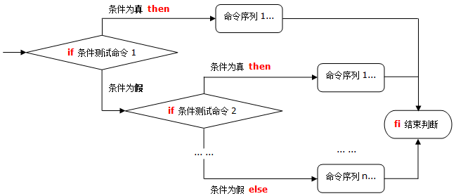
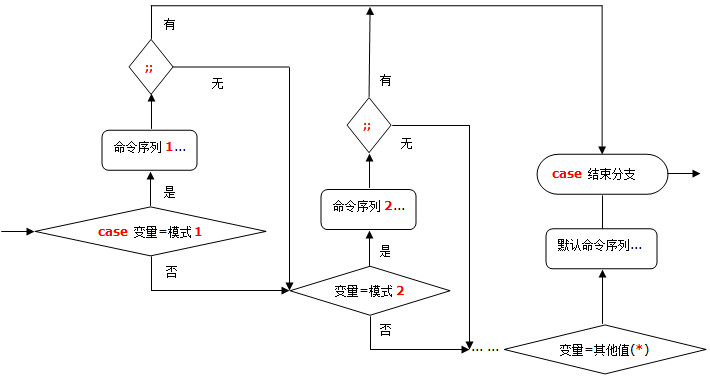

条件测试操作与流程控制语句
在编写Shell脚本时候，经常需要判断两个字符串是否相等，检查文件状态或者是数字的测试等。Shell提供了对字符串、文件、数值等内容的条件测试以及逻辑流程控制。
条件测试操作
程序中的流程控制是由比较和测试语句来处理的，bash具备多种与UNIX系统级特性相兼容的执行测试方法。
常用测试操作
test命令，测试特定的表达式是否成立，当条件成立时，命令执行后的返回值为0，否则为其他数值。
格式1
test 条件表达式
格式2
[ 条件表达式 ] //常用格式，使用方括号时，要注意在条件两边加上空格。常见测试类型
- 测试文件状态
- 字符串的比较
- 整数值的比较
- 逻辑测试
测试文件
格式 [ 操作符 文件或目录 ]
操作符：
- -d：测试是否为目录，是则为真（Directory）
- -e：测试目录或文件是否存在，存在则为真（Exist）
- -f：测试是否为文件，是则为真（file）
- -r：测试当前用户是否有权限读取，是则为真（read）
- -w：测试当前用户是否有权限写入，是这为真（write）
- -x：测试当前用户是否可执行该文件，可执行则为真（Excute）
- -L：测试是否为符号链接文件，是则为真（Link）
- -nt：file1 -nt file2 如果 file1 比 file2 新（修改时间），则为真
- -ot：file1 -ot file2 如果 file1 比 file2 旧（修改时间），则为真
字符串比较
格式 [ 字符串1 = 字符串2 ] [ 字符串1 != 字符串2 ] [ -z 字符串 ]
操作符：
- =：字符串内容相同则为真，就是说包含的文本一摸一样。
- !=：字符串内容不同，则为真（!号表示相反的意思）
- -z：字符串内容为空（长度为零）则为真
- -n：字符串内容非空（长度非零）则为真
- <：string1 < string2 如果string1在本地的字典序列中排在string2之前，则为真
- >：string2 如果string1在本地的字典序列中排在string2之后，则为真
注意点：
1、字符串的 “等于” 比较，为了与POSIX一致，在[]中使用=，（尽管==也可以可以用的）
2、注意在=前后各有一个空格，如果没有空格就是赋值的关系，不是比较的关系。
3、字符串的> <比较运算符，一般放在[[ ]]之中，而不是test ("[]")
4、字符串的> <比较的结果，与本地的locale有关，是按照其字典序列进行比较的
整数值比较
格式 [ 整数1 操作符 整数2 ]
- -eq：等于（equal）
- -ne：不等于（not equal）
- -gt：大于（Greater than）
- -lt：小于（lesser than）
- -le：小于等于（lesser or equal）
- -ge：大于等于（Greater or equal）
逻辑测试
格式 [ 表达式1 ] 操作符 [ 表达式2 ] ...
操作符
- -a 或 && ：逻辑与，“而且”的意思，前后两个表达式都成立时整个测试结果才为真，否则为假
- -o 或 || ： 逻辑或，“或者”的意思，操作符两边至少一个为真时，结果为真，否为为假
- ! ：逻辑否，当制定条件不成立时，返回结果为真
流程控制语句
Shell有一套自己的流程控制语句，其中包括条件语句、循环语句、选择语句等。
if条件语句
if 单分支：当“条件成立”时执行相应的操作。
if 条件测试操作 then 命令序列 fi

if 单分支结构流程图
示例
#!/bin/bash #当/boot分区的空间使用超过80%，就输出报警信息。 use=`df -hT | grep "/boot" | awk '{print $6}' | cut -d "%" -f1` if [ $use -gt 80 ]; then echo "Warning!!/boot disk is full" fi
if 双分支：当“条件成立”、“条件不成立”时执行不同操作。
if 条件测试命令 then 命令序列1 else 命令序列2 fi

if 双分支结构流程图
示例
#!/bin/bash #判断iptables是否在运行，如果已经在运行提示信息，如果没有开启它。 service iptables status &> /dev/null if [ $? -eq 0 ]; then echo "iptables service is running" else service iptables restart fi
if 多分支：相当于if语句嵌套，针对多个条件执行不同操作。
if 条件测试命令1 ; then 命令序列1 elif 条件测试命令2 ; then 命令序列2 elif ... else 命令序列n fi

if多分支结构流程图
for循环语句
根据标量的不同取值，重复执行一组命令操作。
for 变量名 in 取值列表 do 命令序列 done

for循环语句流程图
for循环的几种应用形式：
最基本的for循环： （传统的形式，for var in …)
#!/bin/bash
for x in one two three four
do
echo number $x
done for循环总是接收in语句之后的某种类型的字列表。在本例中，指定了四个英语单词，但是字列表也可以引用磁盘上的文件，甚至文件通配符。
对目录中的文件做for循环
#!/bin/bash for x in /var/log/* do #echo "$x is a file living in /var/log" echo $(basename $x) is a file living in /var/log done
这个$x获得的是绝对路径文件名，可以使用basename可执行程序来除去前面的路径信息。如果只引用当前工作目录中的文件（例如如果输入for x in *），则产生的文件列表将没有路径信息的前缀。
对位置参数做for循环
#!/bin/bash
for thing in "$@"
do
echo you typed ${thing}.
done
for循环中用seq产生循环次数，加上C语言形式的for循环语句
#!/bin/bash
echo "for: Traditional form: for var in ..."
for j in $(seq 1 5)
do
echo $j
done
echo "for: C language form: for (( exp1; exp2; exp3 ))"
for (( i=1; i<=5; i++ ))
do
echo "i=$i"
done
对于固定次数的循环，可以通过seq命令来实现，就不需要变量的自增了，这里的C语言for循环风格是挺熟悉的吧。
while循环语句
重复测试指令的条件，只要条件为真则反复执行对应的命令操作，直到条件为假。如果使用true作为循环条件能够产生无限循环。
while 命令表达式 do 命令列表 done

while循环流程图
示例
#!/bin/bash #批量添加20个系统账户用户名依次为user1~20 i=1 while [ $i -le 20 ] do useradd user$1 echo "123456" | passwd --stdin user$i &> /dev/null i=`expr $i + 1` done
只要特定条件为真，”while” 语句就会循环执行。
case多重分支语句
根据变量的不通取值，分别执行不同的命令操作。
case 变量值 in 模式1) 命令序列1 ;; 模式2) 命令序列2 ;; …… *) 默认执行的命令序列 ;; esac

case多重分支语句流程图
示例
#!/bin/bash case $1 in start) echo "start mysql" ;; stop) echo "stop mysql" ;; *) echo "usage: $0 start|stop" ;; esac
until循环语句
根据条件执行重复操作，直到条件成立为止。Until语句提供了与while语句相反的功能：只要特定条件为假，它们就重复循环，直到条件为真。
until 条件测试命令 do 命令序列 done

until循环流程图
示例
#!/bin/bash
myvar=1
until [ $myvar -gt 10 ]
do
echo $myvar
myvar=$(( $myvar + 1 ))
done
shift迁移语句
用于迁移位置变量，将$1~$9依次向左传递。
例如：若当前脚本程序获得的位置变量如下：
$1=file1、$2=file2、$3=file3、$4=file4
执行一次shift命令后，各位置变量为：
$2=file2、$3=file3、$4=file4
在执行一次：
$3=file3、$4=file4
示例
#!/bin/bash res=0 while [ $# -gt 0 ] do res=`expr $res + $1` shift done echo "the sum is:$res"
循环控制语句
break语句：在for、while、until等循环语句中，用于跳出当前所在的循环体，执行循环体之后的语句。
在while中的示例：
while do commands commands break--------+ | commands | commands | 跳出当前循环（通常在循环体中与条件语句一起使用） | done | | commands<-----+ commands
continue语句：在for、while、until等循环语句中，用于跳过循环体内余下的语句，重新判断条件以便执行下一次循环。
在while中的示例：
while<-------+ do | | commands | 跳回当前循环，重新开始下一次循环（通常在循环体中与条件语句一起使用） commands | | continue----+ commands commands commands done commands commands